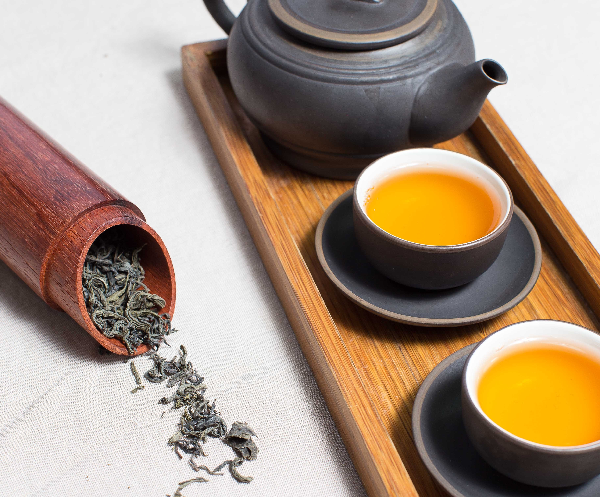

Ugens Te #218: Matcha
Macha's oprindelse
Teen Matcha er ikke en helt normal grøn te. Den har gamle rødder tilbage i det, som nogen vil kalde det japanske, men faktisk kommer de guldbelagte blade fra det gamle kinisiske Tang dynasti. Efter de gamle skrifter, blev blade nænsomt plukket af de smukke buske, herefter startede en længere efterbehandling. De så fine grønne blade blev presset sammen og dampet for derefter at tørre i den varme sol og efterfølgende pulveriseres. Efter denne ikoniske rejse, blev teen blandet med vand og salt og drukket af de fornemmeste.Senere hen blev den nye te opdaget af munkene, som tog denne til sig, og den blev til et buddistisk ritual. De pulveriserede blade rejste med munkene fra syg til nord, øst til vest. På denne rejse blev Matcha teen bragt til Japan omkring det 14. århundrede.
Som årene gik, blev Matcha teen skrevet i glemmebogen i det Kinisiske, og blev derfor en vigtig rolle for de japanske samuraier. Før disse tog til kamp tilberedte ”klan” en kop for at styrke og forberede dem på anstrengelser og kampe de på sin vej skulle møde.
Det er stadig dette, teen er kendt for blandt de ældre japanere i små landsbyer omkring i bjergene. Men for ikke mange år siden, gjorde Matcha teen sit indtog i det Danske, hvor modemagasiner og yogacentre i den dyre ende synes at være besat. Den bliver serveret i alt fra chokolade til te, og er blevet en alle mands eje for den moderne kvinde.
Sundhed
Matcha indeholder større mængder af vitaminer og mineraler, men mest af alt værdsat for sit rigeindhold af forbindelser læger kalder for ”Catechiner”, en type antioxidant. Denne type af antioxidant er forbundet med bekæmpelsen af visse former for cancer – det er dog endnu ikke bevist om den påstand holder vand. Men ifølge USA’s National Cancer Institute kan det grønne pulver holde visse former for cancer i skak. Her er tale om tyktarmskræft, bryst, æggestok, prostata og lunge, så måske det alligevel ikke er så dumt at sætte pris på den andemad-farvede drik.Foruden at være sygdoms forbyggende, kommer der endnu en bonus med: Vægttab. Matcha teen har nemlig egenskaber, som reducerer fedtceller og øger forbrændingen ved indtagelse af en daglig kop.
https://www.matchaful.com/pages/harvest-and-production-process https://www.healthline.com/nutrition/7-benefits-of-matcha-tea#section7 https://www.helsebixen.dk/magasin/matcha-hvorfor-er-det-sundt/ https://matchasource.com/about-matcha/ https://specialtyteaalliance.org/world-of-tea/matcha-introduction/ https://www.telegraph.co.uk/health-fitness/